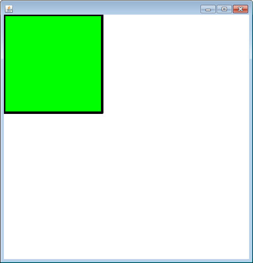
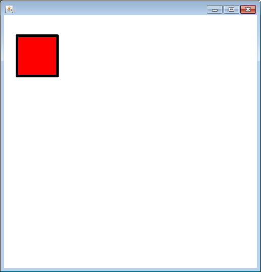

Making Visual Objects by extending SaccoObject
PaintBrush API
This project assumes that you have a fully functioning
Square class
The Square class is a good way of keeping track of all the information that a square might need, but sometimes text based programs can be a little lackluster. Printing out “The Green Square’s corner is at (250,250) and it has a side length of 100.” just seems dry. Using sacco.jar we can cheat a little bit to make our objects have a visual side to them.
Follow the steps below to modify your Square class
to actually show the Square on the screen.
1)
import sacco.*;
2) Change the class header to read “public
class Square extends SaccoObject”
A SaccoObject is an object that has a lot of methods
already built into it. By extending it, we get all of those methods and can use
them to our advantage. This is called inheritance and will be discussed
more in second semester.
3) Add a method with exactly this header:
public void paintWindow(PaintBrush brush)
If you spell it ANY differently this will not do
anything. So double check.
Within the paintWindow method, your job is to use the
PaintBrush object to represent the object. There are many commands that a
PaintBrush can do that are found in the
API, but here’s a couple that are useful
for Square:
void fillRectangle(int x, int y, int width, int height)
paints a filled in Rectangle with the given x, y,
width, and height.
void drawRectangle(int x, int y, int width, int height)
paints the outline of a Rectangle with the given x, y,
width, and height.
void setColor(String col)
sets the color of the PaintBrush to whatever String is
passed in
void setThickness(int thickness)
sets the thickness of the PaintBrush to whatever int
is passed in
For example: if your instance fields were myX,myY, and
mySideLength. The following would draw a green square of that at the location
and size defined by those fields.
public void paintWindow(PaintBrush brush)
{
//sets the color of the PaintBrush to Green
brush.setColor(“yellow”);
//draws a filled in rectangle using the three instance fields
brush.fillRectangle(myX,myY,mySideLength,mySideLength);
}
Remember, the painting may only be done from this
method. If another method wants to affect how the window looks, then it
needs to change one of the instance fields that it uses.public static void main()
{
Square mySquare = new Square(50,100,250);
mySquare.showWindow(); //This line causes the window to pop up.
}
2) Messing with the timing using SaccoTools.pauseFor(int)
When you run your program, the window will pop up, but since the code worked so fast, you won't get to see the original Square. The line of code SaccoTools.pauseFor(int millisec) will cause your code to pause for as many milliseconds as you can pass into the parameter (1000ms = 1 second). Modify your runner to have the program pause in the following locations:
- Construct a Square with using the default
constructor (...
= new Square()).
- call the showWindow method
- print out the toString
SaccoTools.pauseFor(2000);
- double the side length
- print out the toString
SaccoTools.pauseFor(2000);
- Construct a SECOND Square with a different variable,
this time use the constructor using the values of 25,40, and 80 (...
= new Square(25, 40, 80)
)
- call the showWindow method
- print out the toString
SaccoTools.pauseFor(2000);
- set the color to Red
- print out the toString

